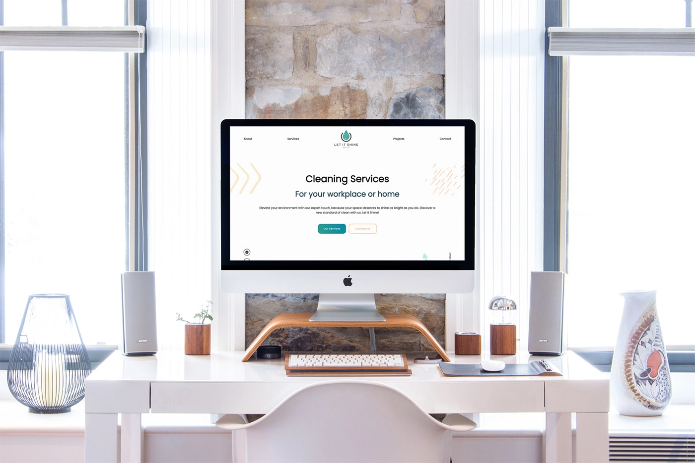

START WITH THE CUSTOMER
Understand what visitors need before deciding what the interface should show.
A CLEANING WEBSITE, MINUS THE CLUTTER
A bespoke website for a local cleaning company that helps them to make a great first impression before they even knock on the door.
THE MISSION, NEATLY FOLDED
Let It Shine needed a professional home online. One that explained the services clearly, built trust immediately, and made getting in touch feel obvious.
From the first sketch to the final deployment, I designed, built, and launched the entire website, including the visual direction, front end, and responsive experience.
The hard part wasn't adding more. It was knowing what to remove, what to emphasise, and how to make a service business feel polished without losing its personality.
FIRST IMPRESSIONS MATTER
THE WHOLE JOB, NOT JUST THE POLISH
A focused stack kept the site fast, maintainable, and easy to extend. The goal was for every decision to feel obvious to the visitor.
Understand what visitors need before deciding what the interface should show.
Turn a long list of services into a clear journey with useful groupings and straightforward language.
Reusable React components kept every screen consistent without treating mobile as an afterthought.
Test the hierarchy, contact flow, and small interactions until the experience feels effortless.
MOST OF THE BEFORE AND AFTER HAPPENED IN THE THINKING
Too much polish can make a local service feel distant or expensive before the conversation even starts.
Soft colours, generous spacing, friendly illustrations, and copy that sounds like a real person.
Cleaning covers far more than "we clean things", but nobody wants to read an instruction manual before booking.
Services were grouped into digestible cards with concise descriptions and visual cues.
A desktop layout squeezed into a phone is technically responsive and emotionally exhausting.
Each breakpoint reshapes the hierarchy and spacing so the primary action stays easy to find and easy to tap.
DIRT DOES NOT DISCRIMINATE BY SCREEN SIZE

THE USEFUL BITS, ARRANGED NEATLY
Clear service groups with just enough detail to answer questions.
A layout that keeps its hierarchy and personality from desktop to phone.
Professional enough to inspire trust, friendly enough to start a conversation.
Calls to action placed where decisions happen, with no treasure hunt required.
THE EVIDENCE, FOR ANYONE CHECKING THE CORNERS

Every service has enough room to explain itself without turning the page into a cleaning manual.
The same hierarchy and confidence, rebuilt for one hand and a much smaller screen.
A warmer introduction to the people behind the polish, with no corporate fog machine required.
Generous layouts that use larger screens without wasting the extra space.
THE PART I TOOK TO THE NEXT PROJECT
This project reminded me that effortless interfaces are usually the result of deliberate decisions. Every useful gap, clear label, and obvious next step had to earn its place.
It also proved that understanding the audience matters more than showing off the toolset. The website did not need to look technical. It needed to feel reliable.
I also learned that there are far more cleaning puns than anyone needs. A suspicious number survived this case study.
ONE LAST CHECK AROUND THE EDGES